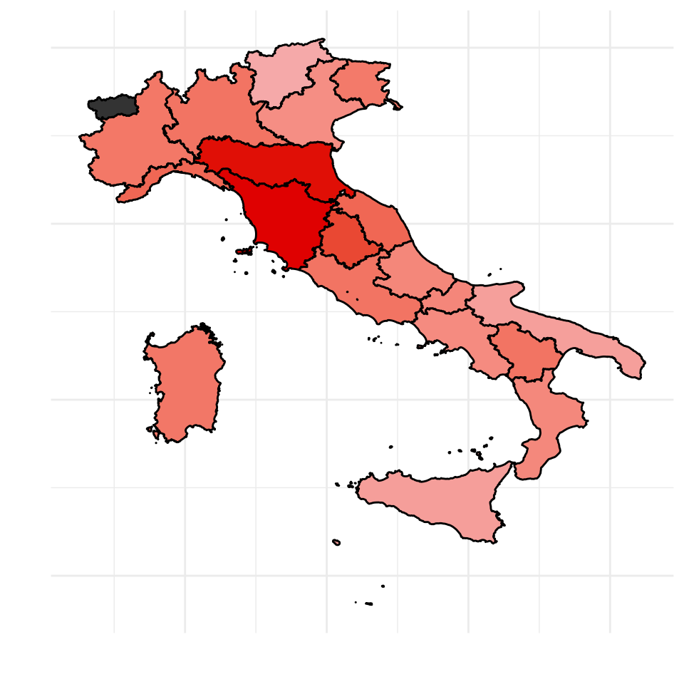

Elections report
Emanuela
March 23, 2018
In one of my lessons I was to give students an overview on how to compile reports with rmarkdown. As Italians, when it gets to elections time, elections is the only thing we here about in the news for months. So I was inspired by the news, and decided to get them to work on the results of our elections.
This year’s data results is not ready for download yet. Hence I decided to work on the previous elections, that is the 2013 elections.
The report is completely parametrized, so it is not hard to make it work on the new year’s elections.
Introduction
I downloaded the data from … (apis?). As it seems that the website does not have good apis, I uploaded the data on my github so that you can access it too without having to trouble too much like I did. The file is a semi-colon separated file so we import it with the read_delim() and then we easily manipulate the dataset:
elections <- read_delim("data/camera_2013_liste_italia.csv", delim = ";") %>%
mutate_all(funs(tolower(.)))
names(elections) <- tolower(names(elections))So that the datset looks like this:
head(elections)## # A tibble: 6 x 7
## dataelezione numlista circoscrizione provincia comune
## <chr> <chr> <chr> <chr> <chr>
## 1 24/02/2013 1 piemonte 1 torino aglie'
## 2 24/02/2013 2 piemonte 1 torino aglie'
## 3 24/02/2013 3 piemonte 1 torino aglie'
## 4 24/02/2013 4 piemonte 1 torino aglie'
## 5 24/02/2013 5 piemonte 1 torino aglie'
## 6 24/02/2013 6 piemonte 1 torino aglie'
## # ... with 2 more variables: lista <chr>, votilista <chr>with info on 152621 sections.
How many votes for the Democratic Party?
Let us now focus on one party. For example we may focus on the Democratic Party that “won” the 2013 elections.
First let us see what was the percentage of votes that it got in each region
tab1 <- elections %>%
separate(circoscrizione, c("regione", "altro"), " ") %>%
group_by(regione, lista) %>%
mutate(votilista = as.numeric(votilista)) %>%
summarise(votes = sum(votilista)) %>%
mutate(perc_votes = round(votes/sum(votes)*100, 2)) %>%
filter(lista == "partito democratico") %>%
select(-lista) %>%
arrange(desc(perc_votes)) %>%
ungroup()
knitr::kable(tab1, col.names = c("Region", "Num. of votes", "Percentage of votes"))| Region | Num. of votes | Percentage of votes |
|---|---|---|
| toscana | 831546 | 37.47 |
| emilia | 989660 | 37.04 |
| umbria | 168820 | 32.07 |
| liguria | 258763 | 27.69 |
| marche | 256968 | 27.69 |
| basilicata | 79696 | 25.70 |
| lazio | 850784 | 25.70 |
| lombardia | 1467161 | 25.60 |
| sardegna | 232895 | 25.16 |
| piemonte | 643835 | 25.10 |
| friuli-venezia | 178149 | 24.72 |
| molise | 42599 | 22.65 |
| abruzzo | 175968 | 22.61 |
| calabria | 209897 | 22.37 |
| campania | 652883 | 21.87 |
| veneto | 628384 | 21.34 |
| sicilia | 467410 | 18.61 |
| puglia | 407900 | 18.49 |
| trentino-alto | 101224 | 16.70 |
It seems that the democratic party is strong in central Italy, a bit less strong in the north of Italy, and definately not that appealing for the South of Italy. For those that do not know the geography of Italy that well, let us join the information on the macro area near each region:
macro_area <- read_csv("data/macro-area")
tab1 <- left_join(tab1, macro_area, by = c("regione"))
knitr::kable(tab1, col.names = c("Region", "Num. of votes", "Percentage of votes", "Macroarea"))| Region | Num. of votes | Percentage of votes | Macroarea |
|---|---|---|---|
| toscana | 831546 | 37.47 | centro |
| emilia | 989660 | 37.04 | centro |
| umbria | 168820 | 32.07 | centro |
| liguria | 258763 | 27.69 | nord |
| marche | 256968 | 27.69 | centro |
| basilicata | 79696 | 25.70 | sud e isole |
| lazio | 850784 | 25.70 | centro |
| lombardia | 1467161 | 25.60 | nord |
| sardegna | 232895 | 25.16 | sud e isole |
| piemonte | 643835 | 25.10 | nord |
| friuli-venezia | 178149 | 24.72 | nord |
| molise | 42599 | 22.65 | sud e isole |
| abruzzo | 175968 | 22.61 | centro |
| calabria | 209897 | 22.37 | sud e isole |
| campania | 652883 | 21.87 | sud e isole |
| veneto | 628384 | 21.34 | nord |
| sicilia | 467410 | 18.61 | sud e isole |
| puglia | 407900 | 18.49 | sud e isole |
| trentino-alto | 101224 | 16.70 | nord |
Those that did not vote for the democratic party, did they vote for another left wing party?
In other words, I would like to find out whether there are regions in which both the percentage of votes to the democratic party and the percentage of votes to another left wing party are high. By doing so I should identify left-wing regions where both percentages are high and righ wing regions in which both percentage are low. Or regions in which one of the two party has attracted most votes leavig the other one with none.
At the time, the second biggest left wing party was called “ecologia sinistra liberta’”.
tab2 <- elections %>%
separate(circoscrizione, c("regione", "altro"), " ") %>%
group_by(regione, lista) %>%
mutate(votilista = as.numeric(votilista)) %>%
summarise(votes = sum(votilista)) %>%
mutate(perc_votes_sel = round(votes/sum(votes)*100, 2)) %>%
filter(lista == "sinistra ecologia liberta'") %>%
select(-lista) %>%
ungroup()
tab2 <- left_join(tab1, tab2, by = "regione")
ggplot(data = tab2, aes(x = perc_votes, y = perc_votes_sel)) +
geom_point(aes(col = macroarea), size = 1) +
labs(y = "Other left wing party", x = "Democratic Party") +
geom_label_repel(aes(label = regione, col = macroarea), size = 3) +
theme_bw()
The plot returns what we expected. Central Italian regions such as Tuscany and Emilia-Romagna are well known for being left wing regions and in fact both the Democratic Party and the second largest left wing party got quite a good percentage of votes, while other regions, such as Veneto and Sicily, both left parties did not go well. Puglia at the time had a governor of “sinistra ecologia liberta’”, hence the left party votes in that region went mainly to it, disadvantaging the Democratic Party.
Mapping the votes
Last let us visualise on a map what is happening to the Italian peninsula. Using the development version of the package mapIT available on github, we plot the data. Notice that the mapIT function works with regions id, hence we better make sure that the regions are correctly identified.
Problems may arise with special characters, capital letters and with region names with more than one word, such as Emilia Romagna for example. Apostrophes, ticks and capital letters are ignored by the mapIT function, but unfortuntaley we trunctaed some of the region names. So let us manually complete those and then we plot it:
tab1 <- tab1 %>%
mutate(regione = ifelse(regione == "emilia","emilia romagna",
ifelse(regione == "friuli-venezia", "friuli-venezia giulia",
ifelse(regione == "trentino-alto", "trentino-alto adige", regione))))And finally plot the percentage of votes obtained by the Democratic Party on the Italian map:
mapIT(perc_votes, regione, data = data.frame(tab1),
graphPar = list(low = "#F5A9A9", high = "#DF0101",
show_guide = "Percentage of votes"))
Paramtrize your report with Rmarkdown
All the above analysis is focused on the situation of the Italian left wing party in the 2013 elections. However one may be interested in a different year or different parties.
You can do that by paramtrising your report with Rmarkdown and here is how you can do that.
At the very beginning of your .Rmd file you find
---
title: "Title"
author: "Author"
date: ""
output:
pdf_document: default
html_document: defaultHere you may add your parameters:
---
title: "Title"
author: "Author"
date: ""
output:
pdf_document: default
html_document: default
params:
party1: partito democratico
party2: sinistra ecologia liberta'
year: 2013
---We have added 3 parameters: one indicating the year, that in this case may only be 2013 as data on other year’s elections is not included in the file, one indictaing the main party we analyse and the second one indicating the second party with whom we want to compare it.
Then, every tim you want to mention the democratic party, you should write r params$party1 and so on.
If you want to analyse a different party you just modify party1 or party2 and then compile your report by clicking on the Knit botton.
If you click on Knit with parameters a user interface, based on Shiny, will open up and you will be able to enter and modify the parameters. At this point it may be nice to provide a list of all the possible values for that parameter: so for instance you may add the main parties:
```
title: “” author: “” date: “” output: html_document: default pdf_document: default params: year: 2013 party1: choices: - partito democratico - sinistra ecologia liberta’ - popolo delle liberta’ - lega nord - fratelli d’italia - movimento 5 stelle beppegrillo.it input: select label: ‘Main party:’ value: partito democratico party2: choices: - partito democratico - sinistra ecologia liberta’ - popolo delle liberta’ - lega nord - fratelli d’italia - movimento 5 stelle beppegrillo.it input: select label: ‘Comparison party:’ value: sinistra ecologia liberta’ —
```
This code will open up an interface in which you can enter the year, then you can choose the main party from a list of 6 possible values and then a comparison party from a drop down menu with 6 different alternatives.